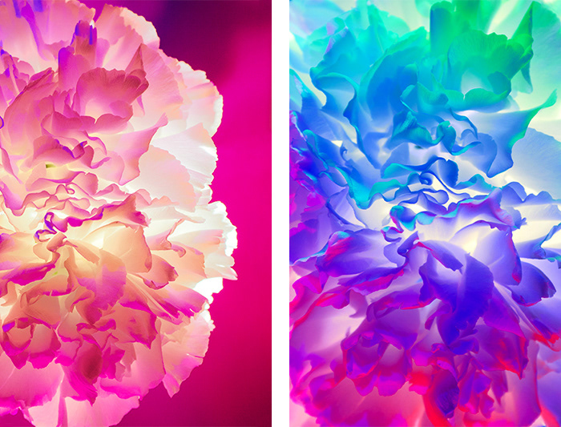

Etape 1

L’insecte est attiré par la couleur des fleurs, les divers motifs qui sont sur les pétales, la forme et la taille des pétales ainsi que l’odeur dégagée par les fleurs. Il faut tout de même noter que chaque insecte a sa propre préférence en matière de couleurs de fleurs. Les papillons qui vivent le jour, par exemple, aiment les fleurs bleues, violettes ou roses, ceux qui volent pendant la nuit adorent les fleurs blanches et les diptères ou les fleurs jaunes.